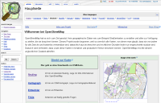
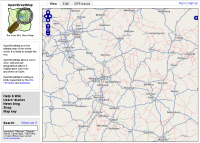

| Willkommen auf der deutschen Startseite von OpenStreetMap ! | |
|  |  |
| OSM Wiki (Deutsch) | Die Karte |
| Beispiele für bereits gut abgedeckte Gebiete auf der OSM-Karte: | |
| Deutschland: Berlin Bremen Frankfurt/Main Hamburg Karlsruhe München |
Weltweit: Baghdad Großraum London Oslo Paris Teheran |